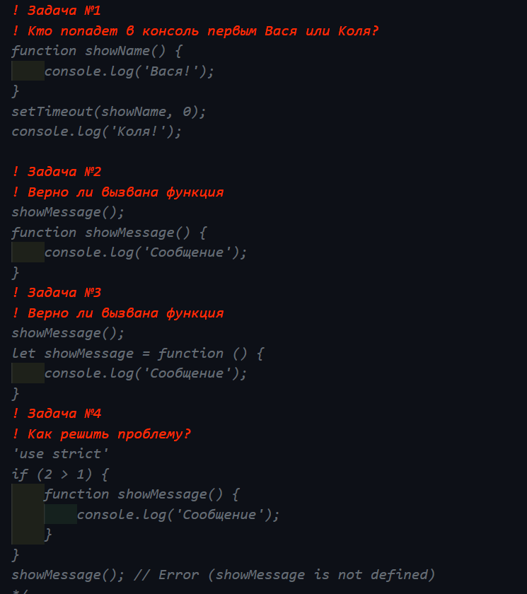
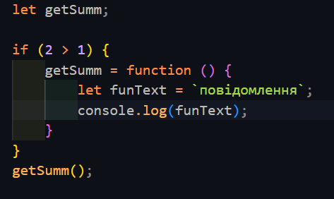
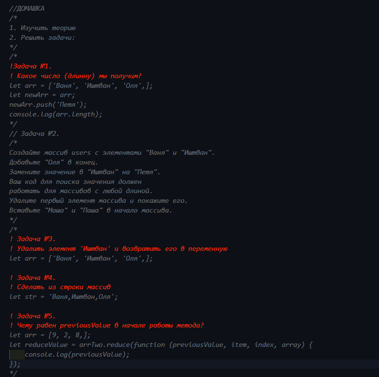
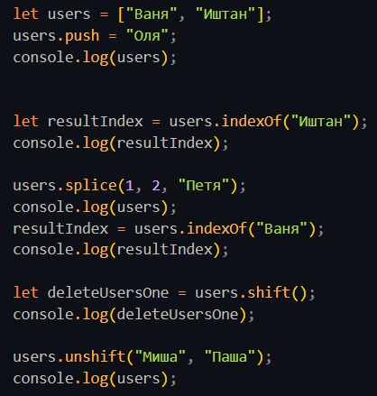
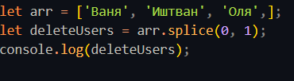
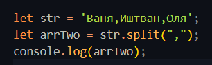
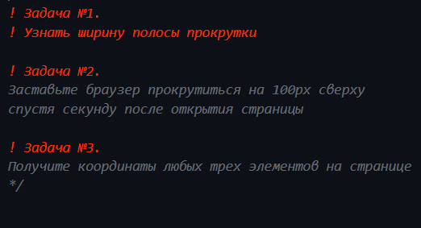
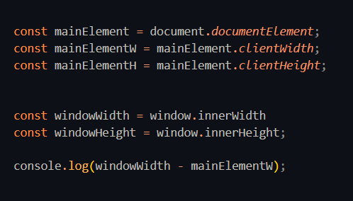
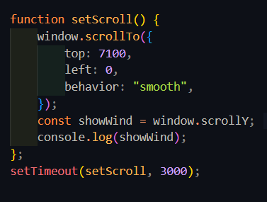
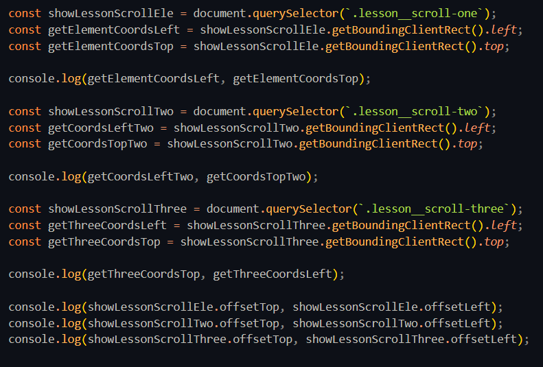

Функції в Javascript
Варіант №1. Першим попаде console.log('коля!') settimeout потрапляє в чергу і виконується пізніше звичайного коду.
Варіант №2. Функція викликана вірно. Функцію можна викликати до її оголошення.
Варіант №3. Функція викликана невірно. Функфональний вираз може бути викликаний тільки після його оголошення
Варіант №4. Використовуємо функціональний вираз
Масиви
Варіант №1. Поверне 4. Метод (push) додае елемент в кинець масиву.
Варіант №2.
Варіант №3.
Варіант №4.
Варіант №5. PreviousValue буде дорівнювати 9, чезер це що не задано початкове значення.
DOM

Варіант №1.

Варіант №2.
- Корчи
- Йончи

Варіант №3.

Варіант №4. Викличе помилку, тому що невірно властивість пошуку(querySelectorAll шукає всю колекцію). Потрібно вказати querySelector.
- Пункт №1
- Пункт №2

Прокрутка і координати JAVASCRIPT
Варіант №1.
Варіант №2.
Варіант №3.
